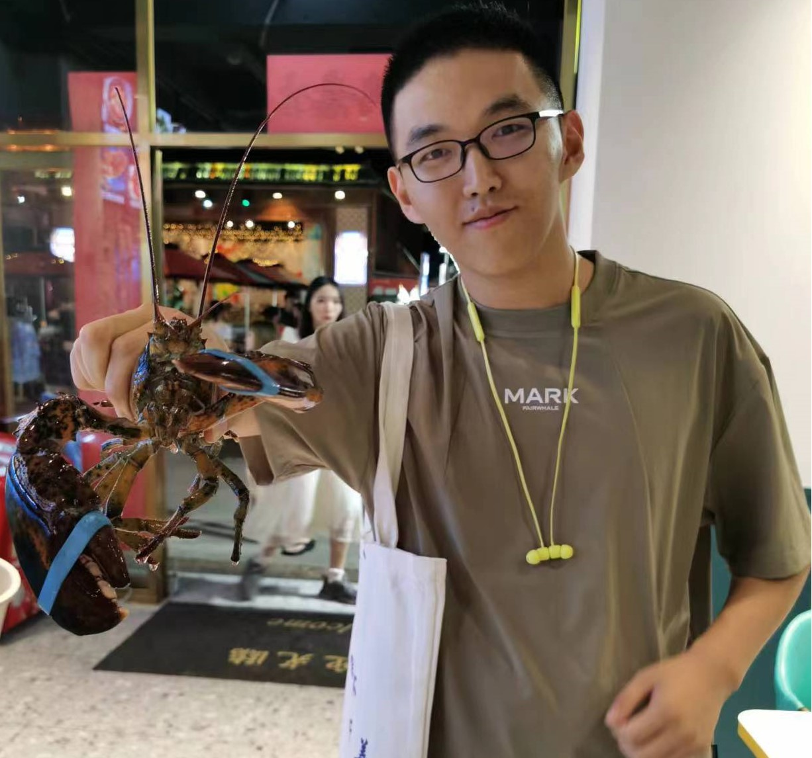
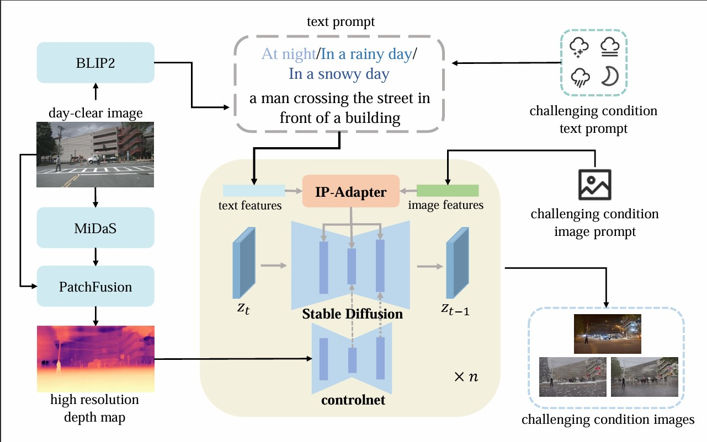

Education
| 2024-2026 | Faculty of Computing, Harbin Institute of Technology |
| 2020-2024 | College of Software, JiLin University |
|  |
Yifan MaoFaculty of ComputingHarbin Institute of Technology, Harbin, Heilongjiang Province maoyf1105 [at] 163 [dot] com [Github], [Google Scholar] |
| 2024-2026 | Faculty of Computing, Harbin Institute of Technology |
| 2020-2024 | College of Software, JiLin University |
|  |
Stealing Stable Diffusion Prior for Robust Monocular Depth Estimation
arxiv
|